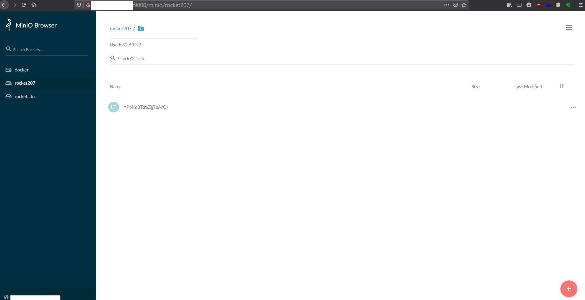
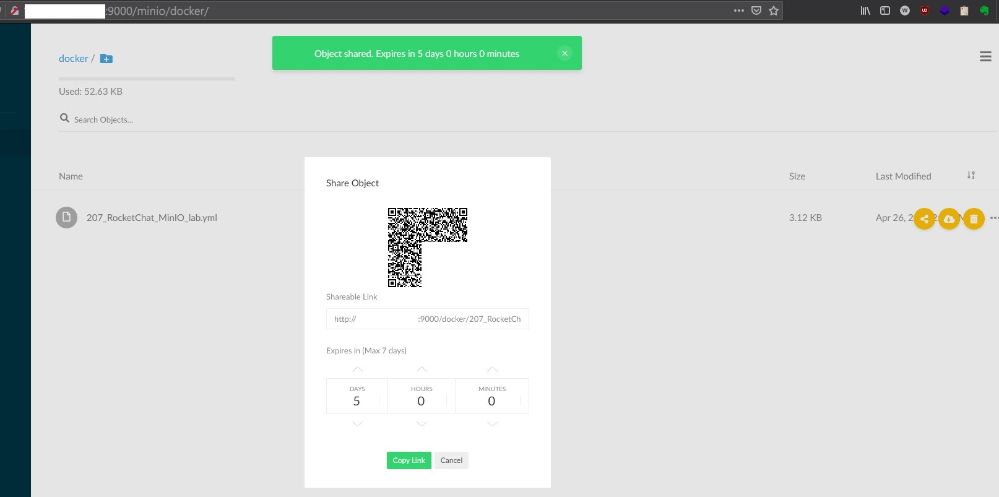
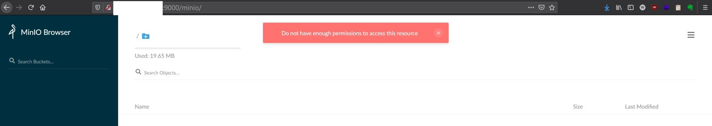
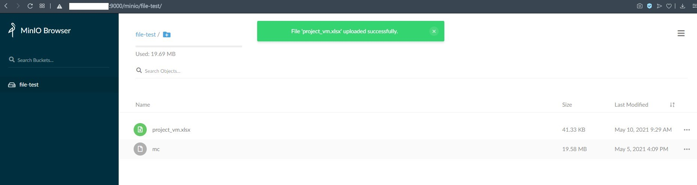

MinIO 簡單介紹
Contents

簡介—主文
MinIO 是一套開源、高效能、K8s 取向 (Kubernetes-native) 的物件儲存解決方案。
同時強調 Hybrid Cloud 因為 MinIO 相容 AWS S3 服務
可以把它想成是 AWS S3 開源版。目前依據官方統計在 AWS, Azure, GCP 上面的 MinIO 實例超過 7.7M 台 (七百七十萬，202105)
簡介—高效能

MinIO 是世界上最快的物件儲存伺服器 (Object Stroage Server) Read 183 GB/s and Write 171 GB/s
正因為高效能，所以可以被 Spark, Presto, TensorFlow, H2O.ai 這種大數據、AI 算術模型軟體拿來當主要儲存區 (primary storage)，取代 Hadoop HDFS。
阿其實我本人也沒碰過這些真正大數據的算術軟體，單純只是把官方簡介翻譯
註: R/W 數據是基於 Standard Hardware 的情況下。請參考 MinIO-Reference Hardware
簡介— Simply run

▲ 上面動畫顯示 MinIO 部屬極為簡單 (不過我是用 docker 部屬啦) ./minio server /path/to/disk/ 就可以把 MinIO server run 起來。
What Is Object Storage?
上面說了 “object” 好幾次，那究竟什麼是 “object” 呢? 其實 易懂白話就是檔案啦!
An object is binary data, sometimes referred to as a Binary Large OBject (BLOB). Blobs can be images, audio files, spreadsheets, or even binary executable code.
Buckets
與 AWS S3 相同，Buckets 就是 MinIO 裡面的 folder (資料夾) 或者 directory (目錄)。
Erasure Coding 糾刪碼 (EC)
MinIO 用上了一個非常酷的東西，叫做糾刪碼 Erasure Coding。 這個使用目的跟實體硬碟 RAID 很像都是 確保資料可用性 的措施。
運作機制就是將資料打散成兩個東西 Data 與 Parity (同位元) Block，其中 Parity Block 能夠重組遺失或者是被損壞的資料區塊。
不過這個機制也造成硬碟使用量翻倍，舉例: 儲存 2 GB 的影片實際占用 4GB。 更多細節可以參考上面官方文件
註: 下面的設定方式實際上只會占用一份硬碟空間。詳細請看最下方的 “更多資訊” 或關鍵字: MinIO standalone
官方也提到 “NOTE: Standalone MinIO servers are best suited for early development and evaluation.”
翻譯:趴數不夠、沒有需求 不要直接去玩 Distributed Mode 啦!
使用 Docker 安裝 MinIO
建立 Docker Volume
有關於 Docker Volume 的介紹，請參考 Docker docs Use Volumes 之後會不會專門產一篇筆記就看緣分了 Docker Volumes 介紹
|
|
接著將容器 run 起來
2022.09.19 整理筆記更新:
照著之前打的 MinIO 部屬文件部屬，發現怎麼 HTTP 9000 port 一直進不去管理介面
原來是 MinIO 官方在今年 4 月將 MinIO console 整合至 MinIO 裡面了
使用 HTTP 9000 port 會被導向到 console (如果建立時沒給定將隨機使用，官方建議使用 9001)
原本的 9000 port 一樣可以被 API 存取 (例如: mc,minio client)
新的 Dashboard 真好看~ 功能也變多了
[官方 Blog] New MinIO Console Enables Efficient Cloud Scale Operations
|
|
9000:9000 9001:9001 port mapping
“Minio” volume mapping to “/data”
root=root
root_pw=password
如果需要 TLS 加密連線設定的話，進入 Container ${HOME}/.minio/certs 目錄設定。Private Key 以 .key 結尾， certificates 以 .crt 結尾
docker-compose 安裝 (2022.09.19 新增)
Deploy MinIO on Docker Compose
官方提供的 docker compose YAML file 偏向比較正規使用，我的屬於把上面那一行 docker run ... 變成 YAML file 而已~
|
|
▲ minio-docker-compose.yaml

▲ 網頁輸入 root 帳號密碼就可以登入查看

▲ 網頁操作可以下載該檔案或者分享，分享連結目前必定有時間限制 (最高七天)
如果要永久分享的話要從 Buckets policy 下手，參考 how to generate share url permanent? #5180
MinIO Client (mc)
mc 是一款 command line tool 支援 File System 和 Amazon S3 相容的雲端儲存服務 (cloud storage service)。
AWS Signature v2 and v4
MinIO Client (mc) 安裝
64-bit Intel
|
|
export 只要登出這個 tty session 之後就會消失。可以把這行加入 /root/.bashrc 讓系統環境變數永久有效
Shell autocompletion
mc#shell-autocompletion
mc 有自帶指令自動補齊的功能，只需要透過以下指令開啟
|
|
重起 bash shell 的方式很簡單
|
|
加入一台 S3 目標
方法一: CLI 新增
|
|
其中 HOSTNAME 填入 URL endpoint 或者 IP。 Endpoint 範例: https://s3.amazonaws.com IP 範例: http://192.168.x.x:9000
註: bash +o history 會關閉 + 清除本次 session 的命令紀錄
(不推)方法二: 手動變更 json 檔案
Configuration File
直接更動檔案:
- HOME.mc\config.json
- USERPROFILE.mc\config.json
- HOMEDRIVE+HOMEPATH.mc\config.json
顯示 “local” MinIO server 上面的 Object 與 bucket
|
|
創建 bucket
|
|
列出樹狀結構
|
|
[可能是 Bug] 若 bucket 內只有一個檔案沒辦法顯示出來
查看 server 資訊
|
|
sync 到 remote MinIO server
|
|
mc 指令加上 --debug 選項可以列出詳細連接過程
MinIO Security 安全性
MinIO 安全性的部分包含兩大綱要:
Identity and Access Management (IAM): 管理帳號 (access key) 與 密碼 (secret key) 以及權限 (Authorization)
Encryption and Key Management (EKM): MinIO 支援 Server-Side Object Encryption (SSE) 將實際在 server 的檔案透過 secret key 加密
本篇筆記將注重在 IAM 的部分。因為公司環境是 On-Prem (私有雲) 沒有強烈將檔案加密保護的需求。
未來若有上公有雲才來檢視是否需要保護營業機密使用 SSE
Identity and Access Management (IAM)
Authentication 掌管帳號密碼，Authorization 針對不同帳號設定權限
MinIO 使用 Policy-Based Access Control (PBAC) 存取控制基於政策。每一條政策裡面都有一條以上的 “rule” 去定義 使用者 (user) 或者 群組 (group) 有哪些權限。
使用指令可以查看目前 MinIO server 上面的政策列表以及內容。
|
|
|
|
列出 使用者 (user) 或者 群組 (group)，其中最高權限使用者 (root) 不會列出。
|
|
實際操作-增加使用者
|
|
查看帳號狀態:
|
|

▲ 新建的帳號 test 沒辦法看到任何已存在的 bucket，也沒辦法創建新的 bucket。
實際操作-為使用者增加權限
|
|
上面這個操作會讓剛剛建立的 test 帳號獲得 所有 bucket 的 R/W 權限。
我一開始想說，那… 如果在 TARGET 給定 bucket 的話會不會就只針對某個 bucket 有 R/W 權限 ?
所以我下了
|
|
不管哪種，都不會有我想要的結果。 原因就在 MinIO 內建的四個 Policy 是針對全域。權限的影響範圍是定義在 Policy 內，而不是 TARGET
既然不符合想要的結果，就 Get your hands dirty 吧!
實際操作-自訂 Policy
目標: 針對 “file-test” 這個 bucket 開啟 R/W 權限
所以我從預設 policy readwrite 進行修改:
原本的:
|
|
可以看到 “Resource” 陣列裡面有 arn:aws:s3:::*，把 * 改成 bucket 的路徑 (不包含 mc alias)
|
|
然後把這個檔案存在 /root/.mc/file-test_config.json 裡面 (路徑可以隨意)
接著為 MinIO server 新增 Policy
|
|
查看一下
|
|
|
|
註1: arn 若沒有給予 /* 則會出現未授權請求 (unauthorize request) 錯誤訊息
註2: Version 不是日期，是語法版本 (詳見下方連結)
接著 unset 本來在 test 身上的 readwrite 政策 + 把剛剛的政策賦予給 test
|
|

▲ 實際使用 test test1234 登入 MinIO 就可以看到顯示的 bucket 只剩下 file-test 這個，而且有 R/W 權限。
Amazon Resource Names (ARNs)
IAM JSON policy elements: Version
更多資訊
使用minio搭建高性能对象存储-第一部分：原型 | Tony Bai

▲ MinIO Distributed Mode 架構圖 (圖片過大，上傳不了 Bookstack)
Author 老柯
LastMod 2021-05-03